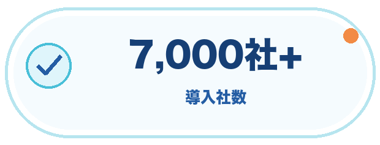
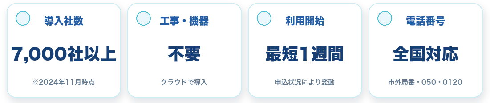
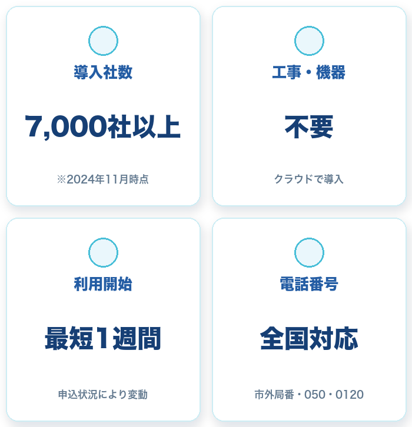

取り逃しを減らす
営業時間外も自動音声で受付。必要に応じて担当者への転送やSMS案内につなげます。
受付を止めない
企業・店舗・個人事業主まで、幅広い電話業務に対応
※導入社数は2024年11月時点。利用開始日は申込状況により異なります。
CLOUD PHONEで変わること
営業時間外も自動音声で受付。必要に応じて担当者への転送やSMS案内につなげます。
受付を止めない
店舗・事務所・外出先のどこでも、スマホやPCから会社番号で対応できます。
どこでも会社番号IVRは月額5,500円（税込）の定額制。着信件数による従量課金を気にせず使えます。
IVR使い放題
POINT 01
スマホ・PC・専用電話機から会社番号で発着信。店舗、事務所、外出先でも同じ番号を運用できます。

POINT 02
主装置や回線工事は不要。申し込みから最短1週間でクラウド電話を利用できます。
POINT 03
自動音声応答、営業時間設定、SMS送信、転送など、電話受付を効率化する機能をまとめて管理できます。
固定電話の受付・振り分け・転送を、
クラウドでまとめて効率化します。


外出先でも会社番号で折り返し。複数端末への同時着信にも対応します。
音声ガイダンスで用件を分け、必要な電話だけ担当者へつなげます。

曜日・時間帯ごとに案内を切り替え、営業時間外も取りこぼしを防ぎます。
音声ガイダンス

自動応答管理
段階着信
鳴り分け
電話履歴管理
自動転送管理

通話録音
リスト管理

SMS送信
営業時間設定
着信拒否
回線設定
店舗や事務所を離れていても会社番号で発着信。電話番のためだけの出社を減らせます。
IVRで用件を事前に振り分け。担当部署や外出中のスタッフへ自動で転送できます。
営業時間外の案内や定型文・URLのSMS送信で、繰り返し対応をシンプルにします。
050、市外局番、0120・0800から番号を選択。スマホ・PC・専用電話機など、利用端末も業務に合わせて決められます。
主装置や回線工事は不要。管理画面から着信、転送、音声ガイダンス、営業時間などを設定します。
設定後はスマホやPCから会社番号を利用できます。申込状況や番号種別により開始時期は異なります。


WEBフォームから無料でご相談いただけます

お急ぎの方は電話で無料相談
外部クライアントからの電話を別住所へ直接取り次げるようになり、リモートワークでも電話業務を継続。
スマホ1台で市外局番を発着信。オフィス・自宅・外出先で利用し、電話の取り逃しを防止。
デリバリー用を含む3つの番号を1台の電話機とスマホで受け、スペースと運用コストを削減。
※掲載内容はCLOUD PHONE公式サイトの導入事例を要約しています。
01

利用したい番号、端末数、IVRやSMSなど必要な機能を確認します。
02

050・市外局番・0120などの番号種別と、利用端末を選択します。
03

管理画面で転送先、営業時間、音声ガイダンスなどを設定します。
04

スマホ・PC・専用電話機から会社番号で発着信できます。
※お申し込み状況や番号種別により、利用開始までの期間は異なります。
表示価格は税込です。SMS送信は1通ごとに料金が発生します。利用番号・端末数・オプションの組み合わせにより月額料金が変わります。